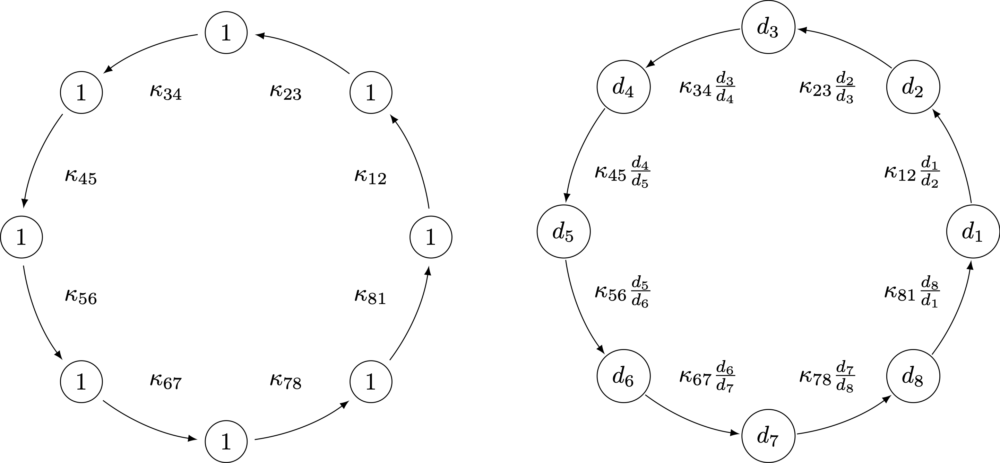

Interior Point Methods

Linear Programming
In standard form for $$A \in \mathbb{Q}^{m \times n}$$, $$b\in \mathbb{Q}^m$$, $$c\in \mathbb{Q}^n$$, $$$ \begin{aligned} \min \; &c^\top x & \max \; & y^\top b \\ Ax& =b & \qquad A^\top y + s &= c \\ x &\geq 0 & s & \geq 0 \\ \end{aligned} $$$
Weakly vs Strongly Polynomial Algorithms for LP
LP with $$n$$ variables, $$m$$ constraints$$L$$: encoding length of the input.
Ellipsoid, interior point methods: running time bound heavily relies on $$L$$.
Strongly Polynomial Algorithms for LP
Dependence on the constraint matrix only
$$$\min c^\top x,\, Ax=b,\, x\ge 0$$$ Running time dependent only on constraint matrix $$A$$, but not on $$b$$ and $$c$$.
Scale invariance
$$$ \begin{aligned} \min \; &c^\top x & \max \; & y^\top b \\ Ax& =b & \qquad A^\top y + s &= c \\ x &\geq 0 & s & \geq 0 \\ \end{aligned} $$$
$$A\in \R^{m\times n}$$. Let $$\mathbf{D}$$ denote the set of $$n\times n$$ positive diagonal matrices.- Since $$\bar\chi_A$$ only depends on $$\ker(A)$$, we have $$\bar\chi_A=\bar\chi_{RA}$$ for any nonsingular $$R\in\R^{m\times m}$$.
- However, we may have $$\bar\chi_A\neq \bar\chi_{AD}$$ for $$D\in\mathbf{D}$$.
- Diagonal rescaling (scaling) of the problem: Replace $$A'=AD$$, $$c'=Dc$$, $$b'=b$$ in the LP for $$D\in \mathbf{D}$$.
- Corresponding variables transformation: $$x'=D^{-1} x$$, $$y'=y$$, $$s'=D s$$.
- Central path is invariant under rescaling.
- Standard interior point methods are also invariant under rescaling.
- The Vavasis–Ye algorithm is not scaling invariant $$O(n^{3.5} \log\bar\chi_A)$$ linear system solves [VY96].
Is there a scaling invariant LLS interior point method?
$$$\bar\chi_A^* := \inf\{\bar\chi_{AD}: D\in \mathbf{D}\}.$$$- Vavasis–Ye (VY): $$O(n^{3.5} \log\bar\chi_A)$$ linear system solves.
- A scaling invariant version of VY would automatically give $$O(n^{3.5} \log\bar\chi_A^*)$$.
- The (scaling invariant) Mizuno–Todd–Ye Predictor-Corrector algorithm finds an $$\epsilon$$-approximate solution in time $$O(n^{3.5}\log\bar\chi_A^* + n^2\log\log(1/\varepsilon))$$: Monteiro–Tsuchiya '05.
- $$O(n^{3.5}\log\bar\chi_A^*)$$ iterations scaling invariant algorithm, but each iteration depends on the bit-complexity $$b$$ and $$c$$: Lan–Monteiro–Tsuchiya '09.
Our contributions
Dadush–Huiberts–Natura–V. '19+
Limitation
No path following interior point method can be strongly polynomial.
Proof using tropical geometry: studies the tropical limit of a family of parametrized linear programs.
A crash course in Interior Point Methods
Complementary Slackness
$$$ \begin{aligned} \min \; &c^\top x & \max \; & y^\top b \\ Ax& =b & \qquad A^\top y + s &= c \\ x &\geq 0 & s & \geq 0 \\ \end{aligned} $$$ A feasible primal dual pair $$(x,s) \geq 0$$ is optimal if and only if $$x^\top s = 0$$, i.e. $$x_i = 0$$ or $$s_i = 0$$ for all $$i \in [n]$$.
Weak duality
$$$ c^\top x = (y^\top A + s^\top)x = y^\top b + \textcolor{red}{s^\top x} \geq y^\top b.$$$
The central path

- For each $$\mu>0$$, there exists a unique solution $$w(\mu)=(x(\mu),y(\mu),s(\mu))$$ such that $$$x(\mu)_i s(\mu)_i=\mu\quad \forall i\in [n]$$$ This is called the central path element for $$\mu$$.
- The central path is the algebraic curve formed by $$$\{w(\mu): \mu>0\}$$$
- For $$\mu\to 0$$, the central path converges to an optimal solution $$w^*=(x^*,y^*,\mu^*)$$
The Mizuno-Todd-Ye Predictor Corrector algorithm
- Start from point $$w^0=(x^0,y^0,s^0)$$ 'near' the central path at some $$\mu^0>0$$.
- Alternate between two types of Newton steps.
-
Predictor steps: 'shoot down' the central path, decreasing $$\mu$$ by a factor at least $$1- \beta/\sqrt{n}$$.
Move slightly 'farther' from the central path. - Corrector steps: do not change parameter $$\mu$$, but move back 'closer' to the central path.
- Within $$O(\sqrt n)$$ iteration, $$\mu$$ decreases at least by a factor 2.
Predictor Netwon step
We obtain the step direction $$\Delta w=(\Delta x,\Delta y,\Delta s)$$ as solutions to $$$\min\, \sum_{i=1}^n\left(\frac{x_i+\Delta x_i}{x_i}\right)^2 \quad \text{s.t. } A\Delta x = 0 $$$
$$\alpha=1$$ would terminate with an optimal solution.
Changes of $$x_i$$ and $$s_i$$ variables in the MTY Predictor-Corrector algorithm
Recent weakly polynomial IPM successess
$$$\min c^\top x,\, Ax=b,\, x\ge 0$$$- Randomized $$\tilde{O}(\sqrt{m}(\mathrm{nnz}(A) + m^2)L)$$ algorithm, where $$\mathrm{nnz}$$ is the number of non-zeros: Lee–Sidford '14-15
- Randomized algorithm in 'current' matrix multiplication time $$\tilde{O}(n^\omega L)$$,
$$\omega \approx 2.37$$: Cohen–Lee–Song '18 - Deterministic algorithm with same runtime: van den Brand '20
For special problems:
- $$\tilde{O}(m^{3/2} \log^2(U/\epsilon))$$ algorithm for an additive $$\epsilon$$ approximation for lossy generalized flow problems: Daitch–Spielman '08
- $$\mathcal{O}(m^{10/7})$$ algorithm for max $$s$$-$$t$$ flow and min $$s$$-$$t$$ cut problems in directed graphs with unit capacities: Mądry '13
The mysterious $$\bar\chi_A$$
through a matroidal lens
The condition number $$\bar\chi_A$$
A convenient characterization
For $$W=\ker(A)$$. Recall that $$\bar\chi_A$$ only depends on the subspace $$W$$.Define the lifting map $$L_I^W : \mathrm{proj}_I(W) \to W$$ by $$$ L_I^W(v) := \argmin\left\{\|w\| : w_I = v, w \in W\right\}. $$$
Properties of $$\bar\chi_A$$
$$$ \bar\chi_A=\sup\left\{\|A^\top \left(A D A^\top\right)^{-1}AD\|\, : D\in {\mathbf D}\right\} $$$ We also use $$\bar \chi_W=\bar\chi_A$$ for the subspace $$W=\ker(A)$$.
The following hold:- If the entries of $$A$$ are all integers, then $$\bar\chi_A$$ is bounded by $$2^{O(L_A)}$$, where $$L_A$$ is the input bit length of $$A$$.
- $$$\bar\chi_A = \max\left\{ \|B^{-1} A\| : B \text{ non-singular } m \times m \text{ submatrix of } A\right\}.$$$
- $$$\bar\chi_W=\bar\chi_{W^\perp}.$$$
Application: Final rounding step in standard IPMs
$$$ \begin{aligned} \min \; &c^\top x & \max \; & y^\top b \\ Ax& =b & \qquad A^\top y + s &= c \\ x &\geq 0 & s & \geq 0 \\ \end{aligned} $$$
- There exists a partition $$[n]=B^*\cup N^*$$ and optimal $$(x^*,y^*,s^*)$$ such that $$B^*=\mathrm{supp}(x^*),\, N^*=\mathrm{supp}(s^*)$$.
- Given $$w=(x,y,s)$$ close to the central path with 'small enough'
$$\mu=x^\top s/n$$, such that for each $$i\in [n]$$, either $$x_i\ll s_i$$ or $$x_i\gg s_i$$. - We 'guess' $$$B:=\{i: x_i\gg s_i\},\quad N:=\{i: x_i\ll s_i\}.$$$
-
We try to move to $$w'=w+\Delta w$$ such that
$$\mathrm{supp}(x')\subseteq B$$, $$\mathrm{supp}(s')\subseteq N$$, $$x',s'\ge 0$$. - We need $$$A\Delta x=0,\, \Delta x_N=-x_N,\, A^\top \Delta y+\Delta s=0,\, \Delta s_B=-s_B,$$$ and for $$x+\Delta x\ge0,\, s+\Delta s\ge 0$$ it suffices that $$$\|\Delta x_B\|\leq \min_{i \in B} x_i,\, \|\Delta s_N\|\leq \min_{j \in N} s_j.$$$
- Natural choices are $$$\begin{aligned} \Delta x&:=\arg\min\left\{ \|u\| : u_N=-x_N, A u=0\right\}\\ \Delta s&:=\arg\min\left\{\|v\| : v_B=-s_B, A^\top z +v=0\right\} \end{aligned} $$$
- Then, we have $$$\begin{aligned} \|\Delta x\|&\le \bar\chi_A \|x_N\|,\\ \|\Delta s\|&\le {\textcolor{red}{\bar\chi_A}}\|s_B\|.\\ \end{aligned} $$$
The circuit imbalance measure
...the combinatorial sister of $$\bar\chi_A$$
The optimal rescaling $$\kappa^*_A$$
$$$\kappa^*_A:=\inf\{\kappa_{AD}: D\in \mathbf{D}\}.$$$ A near-optimal rescaling $$D$$ for $$\kappa_{AD}$$ will be near-optimal for $$\bar\chi_{AD}$$
Example: Let $$\ker(A)=\mathrm{span}((0,1,1,M),(1,0,M,1))$$.
Thus, $$\{2,3,4\}$$ and $$\{1,3,4\}$$ are circuits, and $$\kappa_A\ge M$$.
Can we find a $$D$$ such that $$\kappa_{AD}$$ is small?
Cycles are invariant under rescalings
...that is, cycles of circuits
Approximating $$\kappa^*_A$$
- Algorithmically, the optimal rescaling can be obtained via a minimum-mean cycle computation for the costs $$c_{ij}=-\log\kappa_{ij}$$.
- Minor caveat: computing $$\kappa_{ij}$$ values is NP-complete
- Luckily, for any $$g\in \ker(A)$$ with $$i,j\in \mathrm{supp}(g)\in \mathcal{C}$$, $$$ |g_j/g_i|\ge \kappa_{ij}/(\kappa^*_A)^2.$$$
Layered Least Squares Interior Point Methods
The Vavasis–Ye algorithm
Learning the optimal partition of variables
- Assume the Predictor-Corrector method has already 'found' the partition $$[n]=B^*\cup N^*$$: $$x_i\gg x_j$$ and $$s_i\ll s_j$$ if $$i\in B^*$$, $$j\in N^*$$.
- A simple projection would find the optimal solution, but the usual predictor step does not: $$$\min\, \sum_{i=1}^n\left(\frac{x_i+\Delta x_i}{x_i}\right)^2 \quad \text{s.t. } A\Delta x = 0 $$$
- What does the Vavasis–Ye algorithm do here?
- First, solve $$$\min, \sum_{\textcolor{red}{i\in N^*}}\left(\frac{x_i+\Delta \bar x_i}{x_i}\right)^2 \quad \text{s.t. } A\Delta \bar x = 0 $$$ The $$N^*$$ components of the optimal $$\Delta\bar x$$ give $$\Delta x_{N^*}$$; in this case, $$\Delta x_{N^*}=0$$.
- Next, solve $$$\min\, \sum_{\textcolor{red}{i\in B^*}}\left(\frac{x_i+\Delta \bar x_i}{x_i}\right)^2 \quad \text{s.t. } A\Delta \bar x = 0,\, \Delta \bar x_{N^*}=\Delta x_{N^*} $$$
The Vavasis–Ye algorithm
Layering and crossover events
in the Vavasis–Ye algorithm
- Arrange the variables into layers $$(J_1,J_2,\ldots,J_k)$$ as follows:
- Order $$x_1\ge x_2\ge\ldots\ge x_n$$.
- Start a new layer after $$x_i$$ whenever $$x_{i}>c\bar \chi_A x_{i+1}$$.
- Variables on lower layers 'barely influence' those on higher layers.
- Not scaling invariant!
Progress measure
- $$x_j\ge x_i/(\bar \chi_A)^n$$ at the iterate at $$\mu$$.
- $$x_j(\mu'') < x_i(\mu'')/(\bar \chi_A)^n$$ for the central path point for any $$0<\mu''\le \mu'$$
Scale-invariant layering algorithm
[DHNV19+]
Instead of $$x_i/x_j$$, we look at the scale invariant $$\kappa_{ij} x_i/x_j$$.
- Layers are identified as the strongly connected components of the digraph formed by the edges $$(i,j)$$ such that $$\kappa_{ij}x_i/x_j\ge 1/\mathrm{poly}(n)$$.
- We do not know the $$\kappa_{ij}$$ values, but maintain gradually improving lower bounds on them.
Improved convergence analysis
- $$\mathrm{poly}(n)(\bar \chi_A)^n>\kappa_{ij} x_i/x_j$$ at the iterate at $$\mu$$.
- $$\mathrm{poly}(n)(\bar \chi_A)^n>\kappa_{ij} x_i(\mu'')/x_j(\mu'')$$ for the central path point for any $$0<\mu''\le \mu'$$
- We do not use cross-over events directly, but a more fine-grained potential
- This improves the overall number of iterations from $$O(n^{3.5}\log(\bar\chi_A+n))$$ to $$O(n^{2.5}\log(\bar\chi_A^*+n)\log n)$$
- Analyis also applicable to the original Vavasis–Ye algorithm.
Conclusions and open questions
- Scope to further improve the running time, both the iteration count, and by using faster linear algebra.
- Understand and further explore the combinatorics of $$\bar\chi_A$$ and $$\kappa_A$$.
- Practical advice: preprocessing the problem by a near optimal column rescaling may not hurt
- Strongly polynomial LP: need to 'leave' the central path.